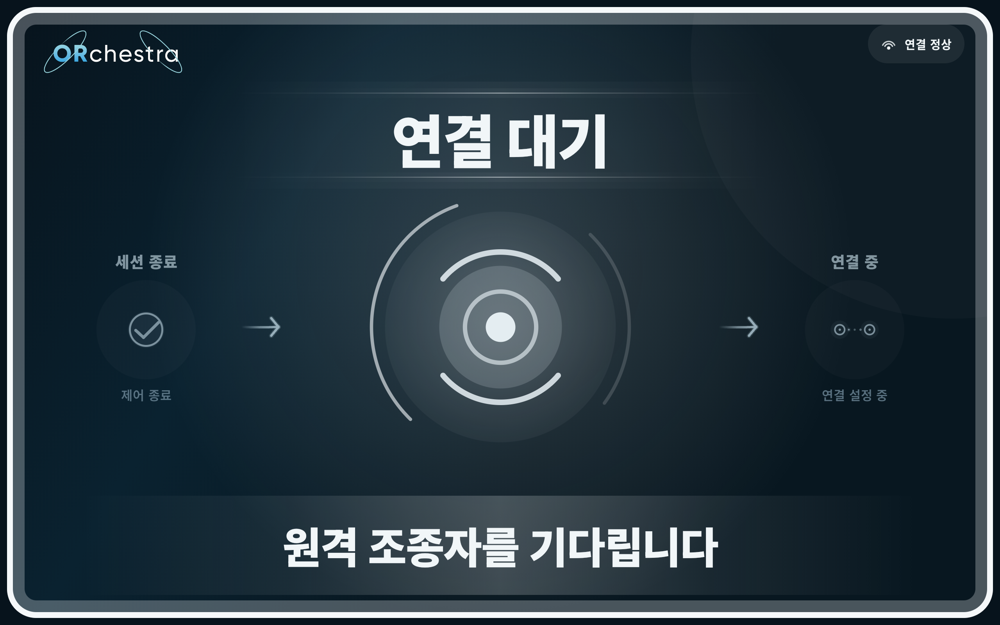
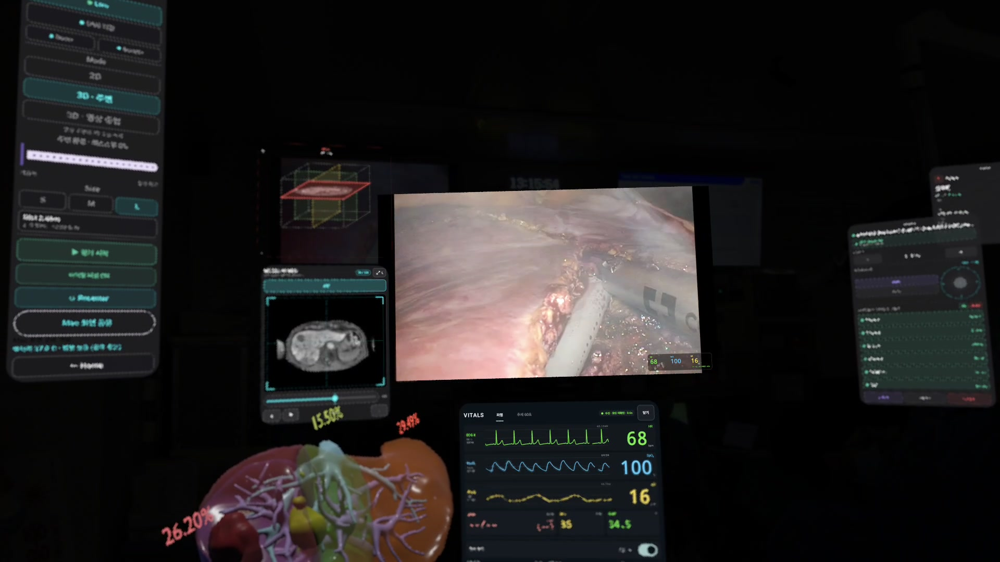
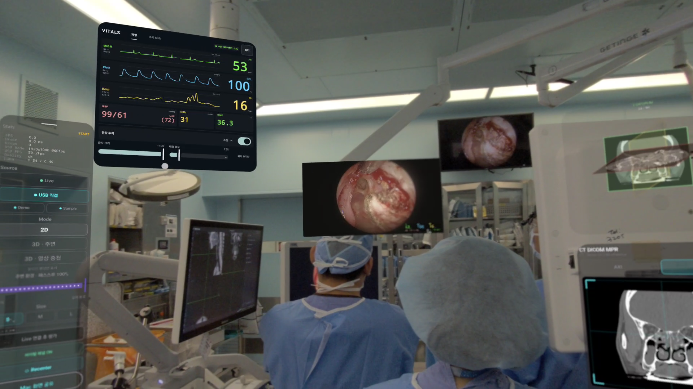

Korean ARPA-H · Robot head displays
Orchestra Display
Three Android apps that display robot status during instrument delivery, endoscope assistance and teleoperation.
Research prototype
View live video from Olympus, STORZ and other endoscopy systems in XR.

Stream video wirelessly or connect a capture device directly, depending on your operating room setup.
View 2D video from standard endoscopes or stereoscopic video from 3D endoscopes.
Browse image slices and move, rotate or resize 3D models.
CT and MRI scans in DICOM format are processed on a Mac. Browse the image slices in XR by study and series.
VTK is used to create 3D surface models from CT scans for viewing in XR. You can also load separately prepared anatomical models and move, rotate or resize them.
Keep vital signs in view alongside surgical video.

View ECG, plethysmography and respiratory waveforms in a dedicated panel. Heart rate, SpO₂ and respiratory rate can also appear as a compact overlay on the video.
Tests progressed from MX850 communication checks to vital sign readings from the MX750 and MX800. Galaxy XR logs later showed data arriving for all three waveforms.